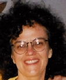

|  |
Jean K. Dickason
6907 Wells Parkway |
| Brief summary of work background and interests |
|
I worked from 1970 to 2000 as a high school teacher, teaching
a variety of subjects, but mainly chemistry and Great Books seminars
for gifted students; in the Great Books program I also served as
supervisor, coordinator, and budgeter. For several years I also taught
chemistry laboratory classes at Shenandoah College. My BS is from
Allegheny College; I have a Masters degree (liberal arts/Great Books)
from St. Johns College (Annapolis).
I retired in 2000 when my husband and I adopted two children from Russia. I am now interested in part-time work at the University of Maryland. I would welcome work in any of the following areas: lab technician, grant writing and tending, event (e.g., conference) organizing, literature search and summarizing, instructor in elementary lab courses, etc. My salary objective is $20-30 per hour, or $20,000-30,000 per year. |
| Detailed resume |